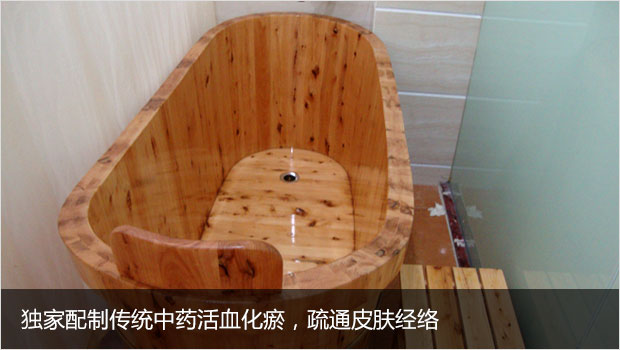

-
查明病因
查清楚最有可能诱发的病因，从源头上阻断致病因素防止复发和病情反复。
-
了解病史
全面了解患者的当前的疾病情况，另外开展相关检查充分了解患者的个人情况后，找到治疗的切入点，对症下药分型施治。
-
分型施治
进行期主要是控制皮损的加重，静止期主要调节患者的内循环,退行期主要做巩固治疗,防止疾病反复。
-
抓住时机
任何疾病都应遵循早发现早治疗的原则，银屑病也一样,冬季恰恰是银屑病的高发季节，所谓冬病夏治抓住时间治疗是关键。
 在线咨询
在线咨询
为展示上海江城皮肤病医院给皮肤病患者带来的康复效果、减轻生活困难的皮肤病患者的经济负担及心理负担12月29日，第二届东方明珠皮肤病成果展活动在位于东方明珠塔的国际新闻中心再次启动。

"上海江城皮肤病医院银屑病技术研发中心"隶属于上海江城皮肤病医院，该中心主任顾昌林曾11次获国家、省、市级的科研成果奖。他在攻克皮肤病世界难题--银屑病上，努力科学开发中医中药，他的"皮肤病健康干预"获国家科技成果二等奖。也是本次成果展的核心治疗技术之一。
去年十一月份，宅医送公益组织和上海江城皮肤病医院就联合呼吁建立健全"重症皮肤病患者社会干预体系"，并开通干预热线400-066-1995，引起上海多家媒体关注。
一年里，接到来自全国各地的患者咨询多达5000人次大部分咨询内容集中在专家诊疗技术和心理辅导方面，为患者营造一个充满爱的和谐氛围。
-
特配独家中药药浴
功效：药浴洗浴 , 可起到疏通经络、活血化淤、驱风散寒、清热解毒、消肿止痛、调整阴阳、协调脏腑、通行气血濡养全身等养生功效。
- 
-
中药药离子熏蒸
功效：热是治病因子"风、寒、湿"的克星，熏蒸有效排除体内的"风、寒、湿"邪，对因"风、寒、湿"邪引起的疾病热疗能起到非常明显的效果。
-
美国308nm激光
功效：靶向针对病灶，不损伤正常皮肤，消除传统调制窄脉产生的波形畸变、只能微处理器控制，高稳定性、高可靠性，可渗透16nm深层组织，修复受损细胞。

-
311窄谱UVB治疗仪
功效：充分接受窄谱UVB发射的光线波长在311-312纳米范围内的光照，同时UVB治疗不需要服用其他辅助医物避免了在传统PUVA方法中使用光敏医物所带来的副作用。
-
穴位埋线抗体疗法
功效：结合"治外必治内，治内必治根"施治理论，将蓝氧导入血液，增加血氧含量改善细胞代谢与活性，促进受损皮肤细胞修复；清除体内致病因子和毒素，激活免疫系统预防反复。
-
 抗感染疗法
抗感染疗法功效：根据针灸学理论,通过针具和药线在穴位内产生刺激经络、平衡阴阳、调和气血、调整脏腑，达到治疗疾病的目的。
-
穿山甲宝宝
姓名：小绍一 年龄：4岁 发病史：3年
治疗前：身上呈黑色鳞甲，确诊为脓包型银屑病
治疗后：恢复健康，上了幼儿园
-
全身性寻常型银屑病
姓名：老吴 年龄：50岁 发病史：十年
治疗前：痒了以后有时候又疼，几乎到了忍无可忍的地步
治疗后：好了，脚上没印子了，心情也好多了